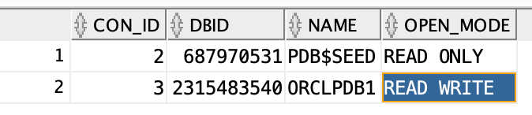
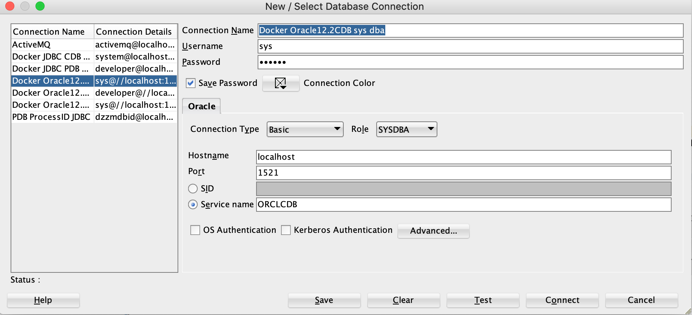
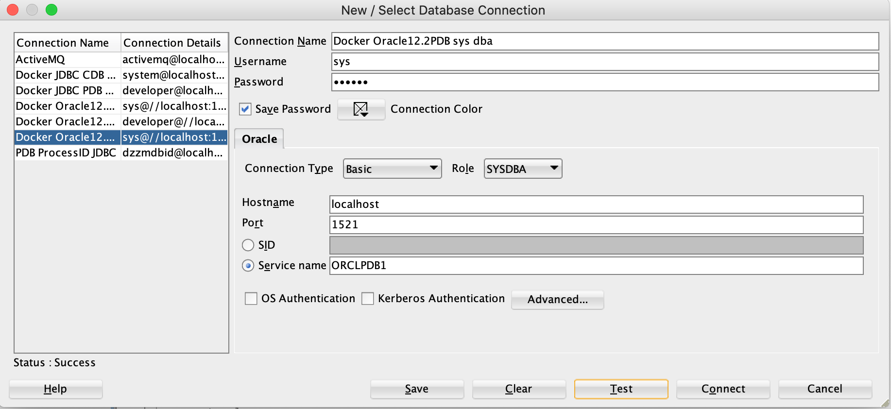

记录如何使用11g以上版本oracle
在进行如下操作之前，需保证Docker在running，然后启动ORACLE
登录ORACLE
1 docker exec -it 3024386a1d24 /bin/bash
1 2 3 4 5 6 7 8 9 10 11 12 13 14 15 16 17 18 19 20 21 22 23 24 25 26 27 28 29 30 31 32 33 34 35 36 37 38 39 40 41 42 43 44 45 46 47 48 49 50 51 52 53 54 55 56 57 58 59 60 61 62 63 64 65 66 67 68 69 70 71 72 73 74 75 76 77 78 79 dockerfiles [remotes/origin/revert-1451-ssl_enable~53] % docker container ls CONTAINER ID IMAGE COMMAND CREATED STATUS PORTS NAMES 3024386a1d24 oracle/database:12.2.0.1-ee "/bin/sh -c 'exec $O …" 43 minutes ago Up About a minute (healthy) 0.0.0.0:1521->1521/tcp, 0.0.0.0:5500->5500/tcp oracle dockerfiles [remotes/origin/revert-1451-ssl_enable~53] % docker exec -it 3024386a1d24 /bin/bash [oracle@3024386a1d24 ~]$ sqlplus / as sysdba SQL*Plus: Release 12.2.0.1.0 Production on Sat Aug 29 12:32:19 2020 Copyright (c) 1982, 2016, Oracle. All rights reserved. ERROR: ORA-12162: TNS:net service name is incorrectly specified Enter user-name: ^C^C^C [oracle@3024386a1d24 ~]$ [oracle@3024386a1d24 ~]$ [oracle@3024386a1d24 ~]$ [oracle@3024386a1d24 ~]$ ps -ef | grep ora_ oracle 23 1 0 12:30 ? 00:00:00 ora_pmon_ORCLCDB oracle 25 1 0 12:30 ? 00:00:00 ora_clmn_ORCLCDB oracle 27 1 0 12:30 ? 00:00:00 ora_psp0_ORCLCDB oracle 29 1 0 12:30 ? 00:00:00 ora_vktm_ORCLCDB oracle 33 1 0 12:30 ? 00:00:00 ora_gen0_ORCLCDB oracle 35 1 0 12:30 ? 00:00:00 ora_mman_ORCLCDB oracle 39 1 0 12:30 ? 00:00:00 ora_gen1_ORCLCDB oracle 43 1 0 12:30 ? 00:00:00 ora_diag_ORCLCDB oracle 45 1 0 12:30 ? 00:00:00 ora_ofsd_ORCLCDB oracle 49 1 0 12:30 ? 00:00:00 ora_dbrm_ORCLCDB oracle 51 1 0 12:30 ? 00:00:00 ora_vkrm_ORCLCDB oracle 53 1 0 12:30 ? 00:00:00 ora_svcb_ORCLCDB oracle 55 1 0 12:30 ? 00:00:00 ora_pman_ORCLCDB oracle 57 1 0 12:30 ? 00:00:00 ora_dia0_ORCLCDB oracle 59 1 0 12:30 ? 00:00:00 ora_dbw0_ORCLCDB oracle 61 1 0 12:30 ? 00:00:00 ora_lgwr_ORCLCDB oracle 63 1 0 12:30 ? 00:00:00 ora_ckpt_ORCLCDB oracle 65 1 0 12:30 ? 00:00:00 ora_lg00_ORCLCDB oracle 67 1 0 12:30 ? 00:00:00 ora_smon_ORCLCDB oracle 69 1 0 12:30 ? 00:00:00 ora_lg01_ORCLCDB oracle 71 1 0 12:30 ? 00:00:00 ora_smco_ORCLCDB oracle 73 1 0 12:30 ? 00:00:00 ora_reco_ORCLCDB oracle 75 1 0 12:30 ? 00:00:00 ora_w000_ORCLCDB oracle 77 1 0 12:30 ? 00:00:00 ora_lreg_ORCLCDB oracle 79 1 0 12:30 ? 00:00:00 ora_w001_ORCLCDB oracle 81 1 0 12:30 ? 00:00:00 ora_pxmn_ORCLCDB oracle 85 1 0 12:30 ? 00:00:01 ora_mmon_ORCLCDB oracle 87 1 0 12:30 ? 00:00:00 ora_mmnl_ORCLCDB oracle 89 1 0 12:30 ? 00:00:00 ora_d000_ORCLCDB oracle 91 1 0 12:30 ? 00:00:00 ora_s000_ORCLCDB oracle 93 1 0 12:30 ? 00:00:00 ora_tmon_ORCLCDB oracle 103 1 0 12:30 ? 00:00:00 ora_tt00_ORCLCDB oracle 105 1 0 12:30 ? 00:00:00 ora_tt01_ORCLCDB oracle 107 1 0 12:30 ? 00:00:00 ora_tt02_ORCLCDB oracle 109 1 0 12:30 ? 00:00:00 ora_aqpc_ORCLCDB oracle 113 1 0 12:30 ? 00:00:00 ora_p000_ORCLCDB oracle 115 1 0 12:30 ? 00:00:00 ora_p001_ORCLCDB oracle 117 1 0 12:30 ? 00:00:00 ora_p002_ORCLCDB oracle 119 1 0 12:30 ? 00:00:00 ora_p003_ORCLCDB oracle 121 1 0 12:30 ? 00:00:00 ora_p004_ORCLCDB oracle 123 1 0 12:30 ? 00:00:00 ora_p005_ORCLCDB oracle 125 1 0 12:30 ? 00:00:00 ora_p006_ORCLCDB oracle 127 1 0 12:30 ? 00:00:00 ora_p007_ORCLCDB oracle 129 1 0 12:30 ? 00:00:00 ora_p008_ORCLCDB oracle 131 1 0 12:30 ? 00:00:00 ora_p009_ORCLCDB oracle 133 1 0 12:30 ? 00:00:00 ora_p00a_ORCLCDB oracle 135 1 0 12:30 ? 00:00:00 ora_p00b_ORCLCDB oracle 137 1 0 12:30 ? 00:00:00 ora_p00c_ORCLCDB oracle 139 1 0 12:30 ? 00:00:00 ora_p00d_ORCLCDB oracle 141 1 0 12:30 ? 00:00:00 ora_p00e_ORCLCDB oracle 143 1 0 12:30 ? 00:00:00 ora_p00f_ORCLCDB oracle 286 1 1 12:30 ? 00:00:01 ora_cjq0_ORCLCDB oracle 368 1 0 12:30 ? 00:00:00 ora_qm02_ORCLCDB oracle 372 1 0 12:30 ? 00:00:00 ora_q002_ORCLCDB oracle 374 1 0 12:30 ? 00:00:00 ora_q003_ORCLCDB oracle 376 1 0 12:30 ? 00:00:00 ora_q004_ORCLCDB oracle 411 1 0 12:31 ? 00:00:00 ora_w002_ORCLCDB oracle 464 412 0 12:32 pts/0 00:00:00 grep --color=auto ora_ [oracle@3024386a1d24 ~]$ export ORACLE_SID=ORCLCDB [oracle@3024386a1d24 ~]$ sqlplus / as sysdba
修改Sys/System的密码
修改密码是便于自己使用跟设置SqlDeveloper，使用JDBC
1 ALTER USER sys IDENTIFIED BY YOURPASSWORD
预备知识
需要知道CDB跟PDB是怎么回事，Oracle 12C引入了CDB与PDB的新特性，在ORACLE 12C数据库引入的多租用户环境（Multitenant Environment）中，允许一个数据库容器（CDB）承载多个可插拔数据库（PDB）。CDB全称为Container Database，中文翻译为数据库容器，PDB全称为Pluggable Database，即可插拔数据库。在ORACLE 12C之前，实例与数据库是一对一或多对一关系（RAC）：即一个实例只能与一个数据库相关联，数据库可以被多个实例所加载。而实例与数据库不可能是一对多的关系。当进入ORACLE 12C后，实例与数据库可以是一对多的关系。下面是官方文档关于CDB与PDB的关系图
其实大家如果对SQL SERVER比较熟悉的话，这种CDB与PDB是不是感觉和SQL SERVER的单实例多数据库架构是一回事呢。像PDB$SEED可以看成是master、msdb等系统数据库，PDBS可以看成用户创建的数据库。而可插拔的概念与SQL SERVER中的用户数据库的分离、附加其实就是那么一回事。看来ORACLE也“抄袭”了一把SQL SERVER的概念，只是改头换面的包装了一番。
CDB组件（Components of a CDB）
一个CDB数据库容器包含了下面一些组件：ROOT组件：
SEED组件：
PDBS：
查看当前容器
1 2 3 4 5 sql> SHOW CON_NAME; CON_NAME CDB$ROOT
查看CDB中可用的PDB
1 2 3 4 sql> SELECT CON_ID,DBID,NAME,OPEN_MODE FROM V$PDBS;

切换至PDB
因为sql开发是需要在PDB上进行，所以需要切换至PDB中，只写两种方式，其中方式1 是笔者常用
1 ALTER SESSION SET CONTAINER = ORCLPDB1;
方式2:
1 alter pluggable database ORCLPDB1 open ;;
使用SqlDeveloper 方便写sql开发
配置SqlDeveloper
为了区分，建议按DB类型进行分开, cdb的用户名跟密码是可以登录pdb的，下面都可以使用前面设置好的sys的用户名，当然你也可以只登录到CDB，然后使用上面的切换方式
使用Basic类型配置CDB
注意正确选择Role
Service name/SID（当前是一样的） 就是你在上面命令行中export的ORACLE_SID
使用Basic类型配置PDB

使用JDBC配置PDB/CDB
只需要把上图中的Connection Type改成Advanced
1 jdbc:oracle:thin:@localhost:1521/orclpdb1
使用Sql Developer进行开发
创建TableSpace
数据文件和日志文件是数据库中最关键的文件。它们是数据存储的地方。每一个数据库至少有一个与之相关的数据文件，通常情况下不仅仅一个，有非常多。数据在数据文件里是怎样组织的？
1 2 3 4 CREATE TABLESPACE DEVELOPER DATAFILE '/opt/oracle/product/12.2.0.1/dbhome_1/dbs/DEVELOPER.dbf' SIZE 4 G AUTOEXTEND ON NEXT 200 M LOGGING EXTENT MANAGEMENT LOCAL AUTOALLOCATE ;
当然如果使用Navicat 的话就不需要写这个sql了。
Schema
Oracle中的schema是若干个数据库对象的集合，用于管理数据库中的各种对象，这里的对象包括：表（table）、视图(View)、存储过程(Stored Procedure)、序列(Sequence)、索引(Index)等等。一个schema下包括若干个表、视图、存储过程等对象。
创建User，及Role。
创建用户需要指定tablespace，可理解成在哪个数据库使用这个user
1 CREATE USER username IDENTIFIED BY password DEFAULT TABLESPACE DEVELOPER TEMPORARY TABLESPACE TEMP;
创建Role，主要作用就是权限管理，不同的role的grant不同的权限，不同的role可以grant给user，便可以实现不同权限管理的功能。比如，创建一个Read-only的role，可以赋给普通用户，只能查询，不能update数据，场景可以是对production的数据赋予read-only权限，很容易理解production都是真实的生产数据，不能随意更改，只能查询。
1 2 3 4 5 6 7 8 9 10 11 12 13 14 15 16 17 18 19 20 CREATE ROLE DEVELOPER_ROLE;SELECT * FROM SYS.ROLE_SYS_PRIVS；GRANT CREATE ANY TABLE , CREATE ANY SEQUENCE , CREATE PROCEDURE , CREATE ANY TYPE , SELECT ANY TABLE ,SELECT ANY SEQUENCE , UPDATE ANY TABLE , INSERT ANY TABLE TO DEVELOPER_ROLE;GRANT DEVELOPER_ROLE TO DEVELOPER;SET ROLE DEVELOPER_ROLE;ALTER USER DEVELOPER DEFAULT ROLE DEVELOPER_ROLE;revoke CREATE PROCEDURE from DEVELOPER;
可以从可用的权限中选择不同的privilege赋给role，然后把role再赋给user，此时user便有了赋予的权限，也不再需要一个一个的role赋给user。user可以拥有多个role，如需要可设置default的role。